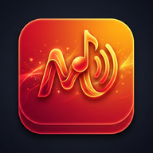
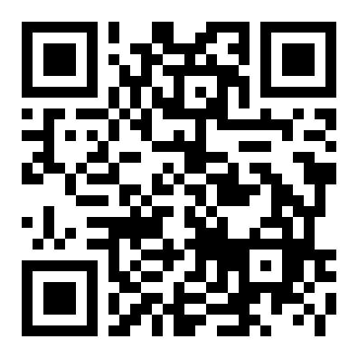

MkMusic
Tus listas de música de YouTube, ordenadas y sincronizadas.
Guía de instalación y uso · gratis · sin descargar nada de tiendas

Escanéalo para abrirla1 · Qué es y qué necesitas
MkMusic es una página web que se instala como una app. Guardas tus canciones de YouTube en listas (Rock, Gym, Coche…), las buscas por título o por grupo y las escuchas con el reproductor oficial de YouTube. Opcionalmente se sincronizan con tu Google Drive para tenerlas en el móvil y en el ordenador.
| Necesitas | Detalle |
|---|---|
| Un dispositivo | Android (Chrome), PC (Chrome o Edge) o iPhone (Safari). Conexión a internet. |
| Una cuenta de Google (Gmail) | Solo si quieres sincronizar. Sin cuenta la app funciona igual, pero tus listas quedan solo en ese dispositivo. |
| Que te den de alta | Para sincronizar, quien te pasó la app debe añadir tu Gmail a la lista de usuarios autorizados. Pídeselo antes del paso 4. |
https://fmecap-bit.github.io/mkmusic/
2 · Instalar (1 minuto)
Android (Chrome)
- Abre la dirección de arriba (o escanea el QR).
- Pulsa los tres puntos ⋮ → Instalar aplicación (o Añadir a pantalla de inicio) → Instalar.
- Aparece el icono de MkMusic junto a tus apps.
PC (Chrome o Edge)
- Abre la dirección.
- A la derecha de la barra de direcciones pulsa el icono de instalar (un monitor con una flecha) → Instalar.
iPhone (Safari)
- Abre la dirección en Safari.
- Pulsa Compartir ⬆ → Añadir a pantalla de inicio.
3 · Primeros pasos
Añadir canciones
- Pulsa ＋ Añadir.
- 🔎 Buscar en YouTube: escribe el grupo o la canción, pulsa Buscar y toca ＋ en las que quieras. Puedes añadir varias seguidas.
- O pega enlaces de YouTube (uno por línea) y pulsa Añadir. El título se rellena solo.
Listas, favoritos y buscar
- Nueva lista: botón ＋ junto a las pestañas. Mover canciones: ⋮ en la canción → Mover a otra lista.
- Favoritas: toca la estrella ☆. Aparecen juntas en la pestaña ★.
- Buscar en tu música: escribe en Canción o grupo. El botón Todas busca en todas tus listas, no solo en la actual.
- Corregir el grupo de una canción: ⋮ → Editar grupo / artista.
Reproducir
- Toca una canción o el botón grande redondo con el icono. Al reproducir se abre el vídeo; con la música en pausa puedes ocultarlo con Ocultar vídeo.
- Botones: aleatorio, anterior, siguiente y repetir (lista o canción).
4 · Sincronizar con tu Google Drive (opcional)
La primera vez que abras la app te ofrecerá conectarte con Google. Si prefieres hacerlo más tarde, elige Empezar sin conectar y hazlo cuando quieras con el icono ☁.
- Pulsa Conectar con Google Drive (o el icono ☁ de arriba) y elige tu cuenta de Google.
- Si aparece «Google no ha verificado esta aplicación»: es normal (la app es privada entre amigos). Pulsa Configuración avanzada → Ir a MkMusic (no seguro).
- Marca el permiso «Ver, crear y borrar sus propios datos de configuración en Drive» y pulsa Continuar.
- Añade una canción: a los pocos segundos el ☁ se pone verde. Ya está guardado en tu Drive.
- En otro dispositivo: instala la app, pulsa ☁ con la misma cuenta y verás tus listas.
| Icono ☁ | Significa |
|---|---|
| Gris | Sin conectar (solo se guarda en este dispositivo) |
| Verde | Todo guardado y al día |
| Amarillo | Sincronizando, o toca para reconectar (ocurre cada vez que abres la app, es normal) |
| Rojo | Error: lee el mensaje que sale en pantalla y reintenta tocándolo |
5 · Buscar sin límites y añadir desde YouTube
Compartir desde la app de YouTube (Android) — sin claves ni límites
Con MkMusic instalada: en la app de YouTube abre un vídeo → Compartir → elige MkMusic. La canción se añade a tu lista actual. No gasta cuota de búsquedas. (No disponible en iPhone ni en el PC.)
Tu propia clave de YouTube (opcional, para buscar dentro de la app)
Iniciar sesión con Google solo sirve para guardar tus listas; no cambia quién paga las búsquedas. Por defecto las búsquedas de YouTube usan una cuota diaria gratuita compartida entre todos (por eso hay un tope de pocas búsquedas nuevas al día por dispositivo). Si quieres buscar sin ese tope, crea tu clave gratuita; la app te guía:
- Al conectar Google por primera vez se abre solo el asistente «Tu propia clave de YouTube» (o ⚙ Ajustes → Clave de YouTube propia).
- Pulsa 1 · Abrir Google Cloud y crea un proyecto nuevo (gratis, nombre MkMusic). La primera vez Google te pedirá aceptar sus condiciones.
- Pulsa 2 · Activar la API y, en la página que se abre, Habilitar «YouTube Data API v3».
- Pulsa 3 · Crear la clave → Crear credenciales → Clave de API → copia la clave (empieza por
AIza…). Recomendado: restringe la clave solo a «YouTube Data API v3». - Pégala en la app y pulsa Probar y guardar. La app comprueba que funciona y te dice qué falta si no.
6 · Ajustes útiles (⚙)
- Interfaz grande: letras y botones más grandes (útil en pantallas pequeñas o lejanas, como la del coche).
- Pantalla horizontal: si giras el dispositivo, el reproductor pasa a la izquierda y las listas a la derecha.
- Exportar / importar copia de seguridad: guarda un archivo con tus listas. Hazlo de vez en cuando; importar sustituye lo que tengas.
- Clave de YouTube propia (asistente de la sección 5), Desconectar Google Drive y Privacidad y condiciones.
7 · Problemas frecuentes
| Qué pasa | Qué hacer |
|---|---|
| «Acceso bloqueado» o «Error 403: access_denied» al pulsar ☁ | Tu Gmail aún no está autorizado. Dile a quien te pasó la app que lo añada. |
| La búsqueda dice que ya hiciste N búsquedas hoy | Hay un límite diario por dispositivo (la cuota se comparte entre todos). Mañana vuelve; mientras tanto comparte desde YouTube, pega enlaces, repite búsquedas ya hechas o crea tu propia clave (sección 5). |
| «Ese vídeo no permite reproducirse fuera de YouTube» | El dueño del vídeo lo prohíbe. La app lo marca y salta al siguiente. Busca otra versión de la canción. |
| El ☁ está amarillo al abrir la app | Normal: tócalo una vez por sesión para reconectar (el acceso dura 1 hora). |
| No veo los cambios nuevos de la app | Cierra la app del todo y ábrela otra vez (o en el navegador, Ctrl+F5). |
| El título aparece como «Vídeo xxxxxxxxxxx» | No se pudo leer el título (sin conexión). Se corrige al reproducir la canción. |
| Se me borró todo | Si sincronizabas: pulsa ☁ y vuelven desde Drive. Si no: Ajustes → Importar copia de seguridad. |
8 · Privacidad en 30 segundos
- Tus listas se guardan en tu dispositivo y, si lo activas, en tu Drive. No hay servidor, ni anuncios, ni rastreadores.
- Para quitar el permiso: myaccount.google.com/permissions → MkMusic → Dejar de permitir, o en la app Ajustes → Desconectar Google Drive.
- Texto completo: Ajustes → Privacidad y condiciones.